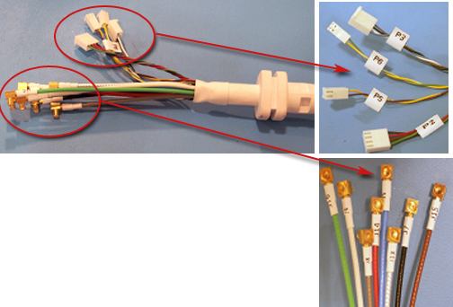

Operating Documentation
Direction 5440001-3, Rev# 6
Signa HDxt Service Methods
Module Version 9.0, Version Date 1/12/10
Operating Documentation |
| Required Persons | Preliminary Reqs | Procedure | Finalization |
|---|---|---|---|
| 1 | Timing N/A | 30 min | Timing N/A |
The following tips can be used to troubleshoot common problems with the 1.5T HD Breast Array coil.
| NOTE: | Coils do not ship with phantoms. Phantoms come in a unified phantom set with the MR system. |
| Item | Effectivity | Qty. | Part Number |
| Digital Volt Meter | - | 1 | - |
| Legacy Phantom | (For Legacy Phantom Kit) | 1 | 2412129 |
| 10 cm Spherical Unified Phantom | (For Unified Phantom Kit) | 2 | 46-317586G1 |
| Unified Phantom Positioner, Breast | (For Unified Phantom Kit) | 1 | 5343432 |
For HDx, HDxt, and HDe, the following coil configuration names must be installed to run the SNR tool:
HD Breast
HD BreastRight
HD BreastLeft
HD BreastRtServ
HD BreastLtServ
For Discovery MR450 and Optima MR450w, the following configuration names must be installed to run the SNR tool:
HD BreastRight
HD BreastLeft
Problem:
Unable to pre-scan or are scanning and receiving no signal.
Possible Solution:
Verify that the port which is used to plug in the coil either has a green light illuminated (Port A or Port B) or a green lock (Port P1, P2, P3 or P4) indicated. This indicates the coil is properly plugged into the system.
Verify that the system has correctly detected the coil by checking in the Currently Connected window in the GUI to select coils in Rx as shown in the example in Illustration 1.
Illustration 1: Currently Connected Coils Window in the Scan Screen

Verify that the landmark is correct (need link) and that the cradle has not unlatched.
Verify that the scan locations and any FOV offsets are correct.
Perform a continuity check on the output cable (Section 4.4). The continuity check must be performed by a GE authorized Service Engineer.
Verify that the coil is positioned with the cable exiting towards the bore.
Verify that the cable is not looped or crossed.
There can also be a problem at the system interface port.
Try scanning in both ports. If still cannot get a signal, try to scan (transmit and receive) with the body coil. For this test, be sure to remove the imaging coil from the magnet bore before scanning with the body coil.
If still can not receive a signal the problem probably lies with the MR system.
If the scan completes successfully, there is probably a problem with the breast coil.
If unable to scan with the substitute coil, there may be a system problem related to this particular coil type.
Problem:
Poor IQ, shaded images, or if SNR fails
Possible Solution:
Perform a continuity check on the output cable (Section 4.4). The continuity check must be performed by a GE authorized Service Engineer.
Verify that there are no loops in the cables.
Verify that there are no metal or ferromagnetic objects close to the coil, patient or magnet (i.e., safety pin, hair pin).
Verify that the coil is properly positioned.
Verify that the center frequency is within the frequency adjustment range for your system.
Verify that the R1, R2 and TG values from the pre-scan are within normally expected ranges.
If not done already, perform the Multi-Coil Quality Assurance Tool.
If the values obtained do not fall within normal operating parameters, investigate this further by performing a phantom scan with the body coil. For this test, be sure to remove the imaging coil from the magnet bore before you scan with the body coil.
If the same problem remains, there is probably an MR system problem.
If the body coil scan is satisfactory, acquire a scan using another coil of the exact same type (receive-only, phased array) and the same system coil selection.
If the image quality is visibly improved, there may be a problem with the breast coil. Contact GE for further assistance.
If the image quality still suffers, there may be a system problem related to imaging with this type of coil.
Problem:
There is a black line or signal void on the image.
Possible Solution:
Verify that there is no metal present in the area being scanned in or on the patient.
Before removing the cable assembly from the coil, visually inspect all coaxial connectors and pins on the system plug. If there are any broken, deformed or recessed pins or coaxial connectors, replace the cable assembly.
Remove the cable assembly from coil, refer to the1.5T HD Breast Coil System Cable Replacement procedure.
RF Signal Channels Check
| NOTE: | The center pins of the System Connector receive coaxial connectors are extremely fragile. Do not attempt to make any measurements at these center pins. |
Illustration 2: Pin Layouts of Hypertronics Connector

Illustration 3: Coil Side Connectors

The following procedure will rule out a short to GND for each of the signal pins detailed in the following table. This check does not determine continuity for each of the MC signal connections.
With the coil cable disconnected, use a multimeter (Set to Continuity) to assure an open circuit condition exists between the designated pin and GND for each signal channel listed in Table 1.
Table 1: Designated Pins
| Coil Side Connector RF GND Shield | Coil Side Connector RF Center Pin |
|---|---|
| J8 | J8 |
| J7 | J7 |
| J5 | J5 |
| J6 | J6 |
| J15 | J15 |
| J16 | J16 |
| J14 | J14 |
| J13 | J13 |
If one or more of the readings indicate a short, replace the cable. If all of the above readings indicate an open circuit condition, proceed to the DC Lines Continuity Check.
DC Lines Continuity Check
With the coil cable disconnected, use a multimeter (set to continuity) to determine continuity between the designated pins for each control channel in Table 2.
Table 2: Designated Pins
| System Side Connector Pin | Coil Side Connector |
| F1 | P3-1 |
| F2 | P3-2 |
| F3 | P3-4 |
| F4 | P3-3 |
| F5 | P4-2 |
| F6 | P4-1 |
| F7 | P4-3 |
| F8 | P4-4 |
| I3 | P6-2 |
| I6 | P6-1 |
| I7 | P5-2 |
| I8 | P5-1 |
If any pair indicates an open, replace the output cable.
Additional diagnostics can be run using Multicoil Bias Diagnostic or MCQA Tool.